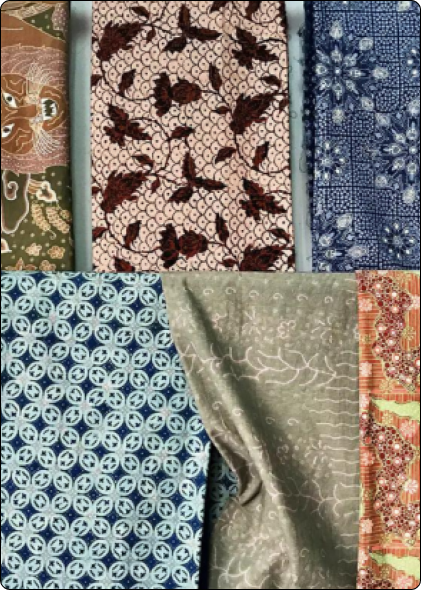
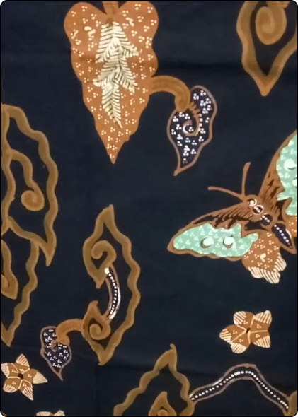
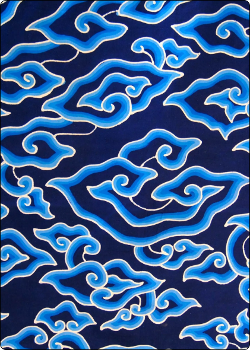

Kampung Batik Jetis terletak di Yogyakarta, Indonesia, dan memiliki
sejarah yang kaya dalam industri batik. Pada awalnya, kampung ini
mulai terkenal sebagai pusat produksi batik pada zaman kolonial
Belanda di abad ke-18. Pengrajin batik di Jetis tidak hanya mahir
dalam teknik pembuatan batik tradisional, tetapi juga memperkaya
seni ini dengan inovasi-inovasi baru.
Selama berabad-abad, Kampung Batik Jetis terus mewarisi teknik-teknik pembuatan batik yang telah diturunkan secara turun-temurun. Masing-masing motif dan pola batik yang dihasilkan di kampung ini memiliki makna dan filosofi tersendiri, mencerminkan kekayaan budaya dan sejarah lokal. Para pengrajin batik di Jetis juga aktif dalam mempertahankan keaslian motif-motif tradisional sambil tetap membuka ruang untuk eksperimen dan kreasi baru.
Selain menjadi pusat produksi batik yang terkenal, Kampung Batik Jetis juga menjadi tujuan wisata yang populer bagi para pengunjung yang ingin menyaksikan langsung proses pembuatan batik dan mempelajari lebih dalam tentang warisan budaya yang terkandung di dalamnya. Dengan demikian, Kampung Batik Jetis tidak hanya menjadi simbol keberlanjutan industri batik tradisional, tetapi juga menjadi penjaga keaslian seni dan budaya Indonesia.
Selama berabad-abad, Kampung Batik Jetis terus mewarisi teknik-teknik pembuatan batik yang telah diturunkan secara turun-temurun. Masing-masing motif dan pola batik yang dihasilkan di kampung ini memiliki makna dan filosofi tersendiri, mencerminkan kekayaan budaya dan sejarah lokal. Para pengrajin batik di Jetis juga aktif dalam mempertahankan keaslian motif-motif tradisional sambil tetap membuka ruang untuk eksperimen dan kreasi baru.
Selain menjadi pusat produksi batik yang terkenal, Kampung Batik Jetis juga menjadi tujuan wisata yang populer bagi para pengunjung yang ingin menyaksikan langsung proses pembuatan batik dan mempelajari lebih dalam tentang warisan budaya yang terkandung di dalamnya. Dengan demikian, Kampung Batik Jetis tidak hanya menjadi simbol keberlanjutan industri batik tradisional, tetapi juga menjadi penjaga keaslian seni dan budaya Indonesia.
Karya Batik Kampung Trusmi Cirebon


